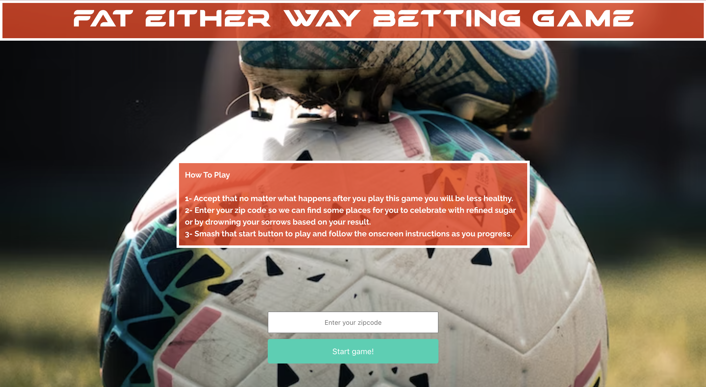

Kaitlyn Atif
Full Stack Developer
Hi, I'm Kaitlyn Atif. I'm a full stack developer with experience in HTML, CSS, JavaScript, Node.js, Express.js, React, Python, C++, and SQL/MySQL.
California SF Bay Area Native | Protein Biochemist | Software Developer | Military Spouse
Associate Researcher with over ten years of laboratory bench experience and over five years of experience in IgG therapeutics—specifically the downstream stages of the mAb (monoclonal antibody) drug development process—aspiring to pivot into software development.
I have built a vital set of skills through my experiences in biotechnology and other scientific environments-the ability to think critically, clear and effective communication, attention to detail, the ability to document data and details accurately, how to collect and manage large experimental datasets, how to identify and analyze trends in large datasets, and how to identify the relevant data needed to solve a given problem. I have an exceptionally strong foundation in experiment design, process development, data analysis, and troubleshooting. My background working for biotechnology start-ups in Silicon Valley has taught me to be a very quick learner of new skills, adaptive to many different roles within a company, and how to effectively multi-task and manage multiple projects simultaneously.
Portfolio
Soccer Betting Game
Drawing Board